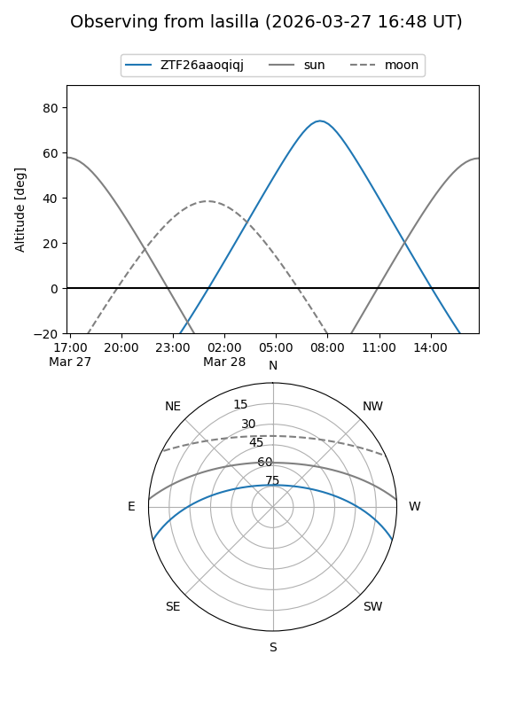
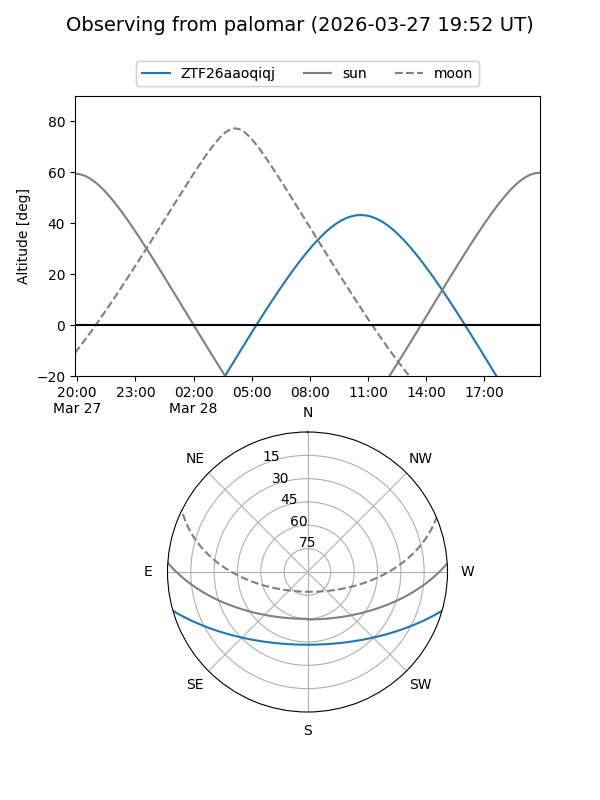

ZTF26aaoqiqj
Target ZTF26aaoqiqj at 2026-03-28 13:20
Aliases and brokers:
FINK: link
Lasair: link
ALeRCE: link
alt names
ZTF26aaoqiqj (ztf,fink_ztf)
Coordinates:
equatorial (ra, dec) = 228.0400,-13.29609
equatorial (HMS+DMS) = 15:12:09.60,-13:17:45.91
galactic (l, b) = (347.5929,+37.08908)
Flags:
Photometry:
last ztfg=18.58
1 ztfg detections
Lightcurve
Visibility


Additional plots